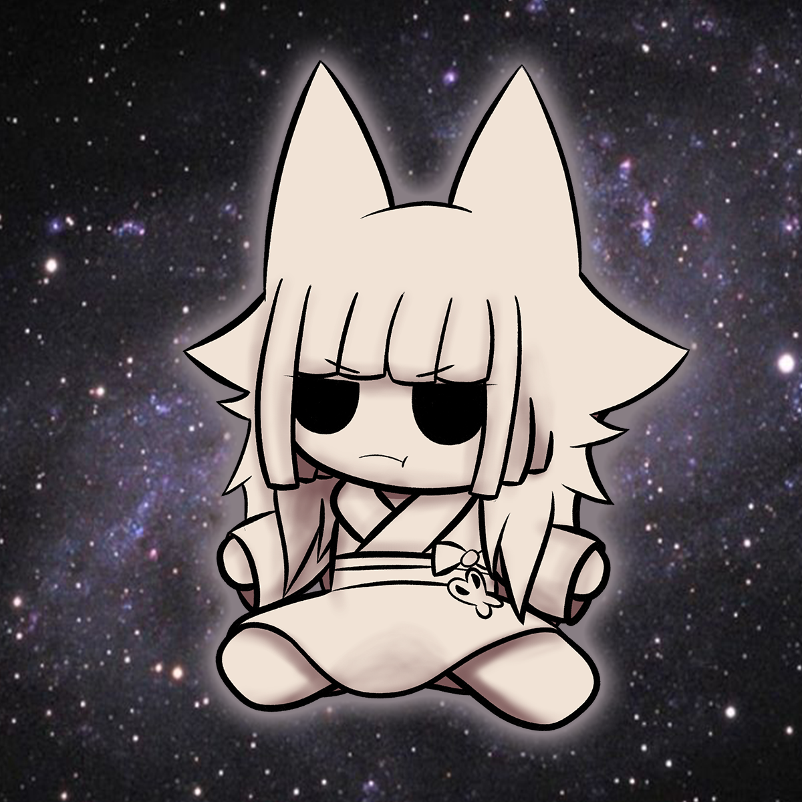

Estou plenamente ciente do que você está pensando. Afinal, é um discurso que já ouvi várias e várias vezes.
“Ah, larga isso pra lá! Você é uma deusa, não precisa dela pra nada!”
Sim, eu entendo a lógica. Mas não consigo aplicar essa filosofia quando se trata dela. Existe em mim essa insistência de acreditar que, se ela não demonstra o mínimo de respeito, ao menos eu poderia fazê-la experimentar uma amostra grátis desse sentimento.
Ela é minha irmã, poxa!
Se ela não tem ninguém ao lado, eu movo céus e terras para ocupar esse posto. (Mesmo que, na prática, ela demonstre um nível de interesse semelhante ao de uma pedra olhando para um formigueiro.)
Massssss.. veja só! Tudo isso se torna irrelevante agora! E sabe por quê? Porque acabei de concluir minha mais nova invenção, e estou convencida de que ela não apenas vai me aproximar dela, como vai me permitir sentir sua presença de forma efetiva!
Você quer ver? Ah, é claro que quer!
Vou revelar no três! Preparado? Então vamos lá!
É um…
É dois…
É TRÊS!
AI, SOCORRO! EU DERRUBEI NO CHÃO SEM QUERER! VOCÊ TÁ INTEIRA? NÃO SE CORTOU? AI, SANTO ALTÍSSIMO, COMO EU SOU DESASTRADA!
Uuuuuufa! Felizmente nada quebrou, tá tudo bem.. eeeeeu acho!
Ugh, pronto. O momento foi pelo ralo, massss..
Voiiiilá!
Recebam com aplausos a mais recente maravilha da minha genialidade artesanal:

Desenvolvida inteiramente por esta que vos fala!
Imagino os pensamentos na sua mente: “Mas que bosta, hein!”, “Todo esse suspense pra uma boneca de pano?”. Sim, compreendo a reação! Parece tolice, mas acredite: essa criatura de fibra sintética é realmente especial! Não apenas porque a confeccionei com tanta dedicação, mas porque busquei nela a mais fiel representação dela!
E bota trabalho nisso, viu? Foi uma verdadeira epopeia têxtil! Escolher fibras adequadas, garimpar tecidos, lidar com enchimentos, costurar cada detalhe, bordar o rosto e modelar o corpo dessa criaturinha exigiu um tempo maior do que o previsto!
Eu confesso que quase cheguei a pedir financiamento acadêmico só pra terminas, mas nada disso importa mais! Ela está pronta, e é perfeita como ela! Não é mesmo, Thrauminha?
Disse ela, apertando a pelúcia com o afeto que gostaria de depositar em um abraço real dela.
Ah! Eu preciso mostrar isso pra ela! Será que ela vai apreciar? Bom, confesso que tenho minhas dúvidas, mas não custa tentar! Talvez essa versão fofinha e acolchoada consiga tocar, ainda que de raspão, aquele coração blindado!
É agora ou nunca!